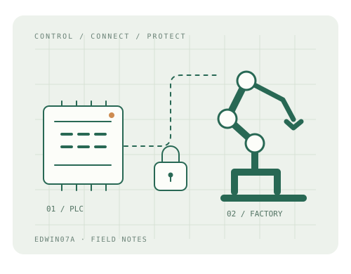

COMPETITION / ISCC
第二次参加 ISCC：微型工厂的 PLC 控制与加密实践
从工位动作、变量映射到触摸屏控制，记录我负责的程序编写、MES 加解密页面与人脸识别接入。
phil · 约 10 分钟阅读全文 ↗
我是 phil，也叫 Edwin07A。这里记录我的比赛与项目经历，从 PLC 程序、工厂仿真，到数据采集与通信保护。
阅读第二次 ISCC 参赛记录

从工位动作、变量映射到触摸屏控制，记录我负责的程序编写、MES 加解密页面与人脸识别接入。
把做过的项目整理成能回头查阅的记录：系统怎样连接、程序怎样控制、问题怎样定位，以及哪些地方还值得继续验证。第一篇从第二次参加 ISCC 的微型工厂项目开始。